Pivot Grid
This Block allows you to display data in the format of a Pivot Grid. The Pivot Grid can display the data in a customizable way and allows the users to specify which rows and columns are compared against each other. It consists of the grid itself as well as a field chooser which allows you to change the way the data is represented.
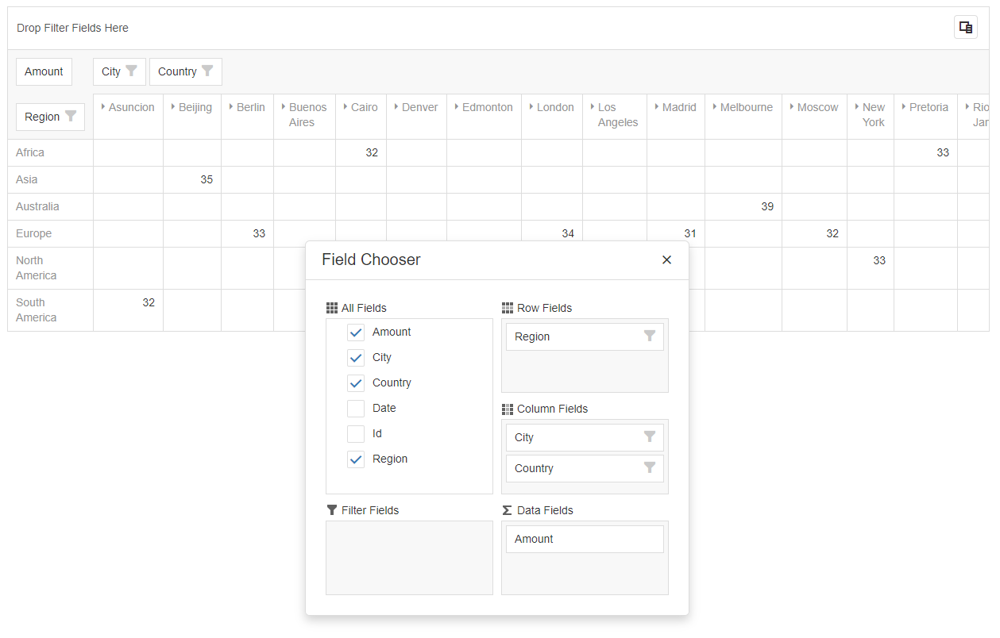
Pivot Grid Properties
Appearance
Common Properties
Options for the appearance include its visibility.
See the Common Properties article for more details on common appearance properties.
Options that are specific to Pivot Grids include the options to show borders, show column totals, show column grand totals, show row totals, show row grand totals, show drill down, and show totals prior.
For details on common grid properties, see the Data Grid article.
Show Column Totals
This specifies if the totals across each row are counted and displayed on the side of a grouped column.
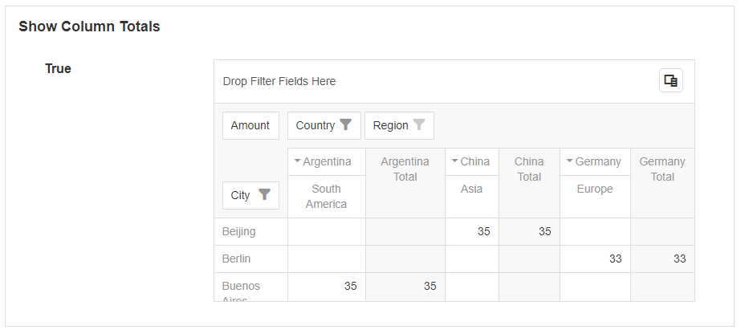
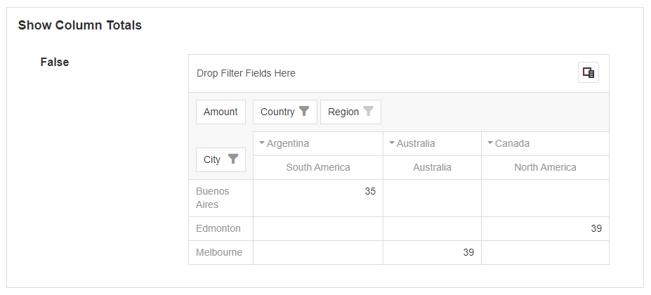
Show Column Grand Totals
This specifies if the totals across each row are counted and displayed on the side.
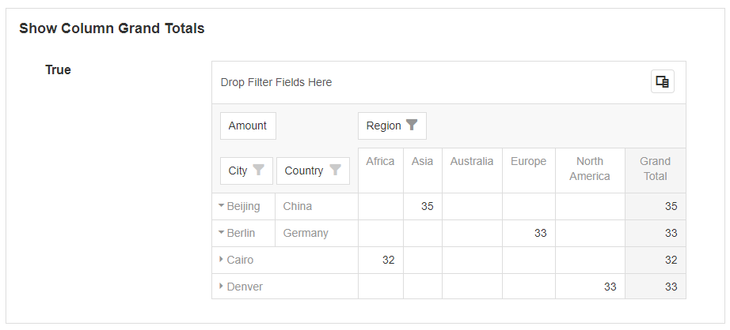
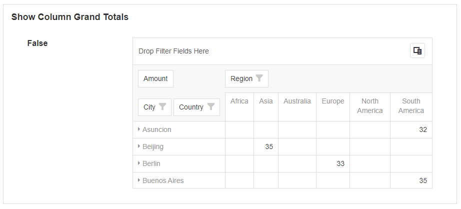
Show Row Totals
This specifies if the totals across each column are counted and displayed after each grouped row.
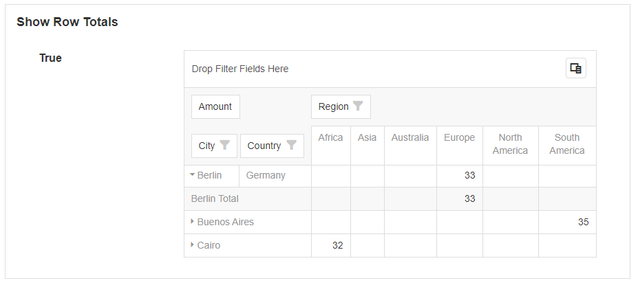
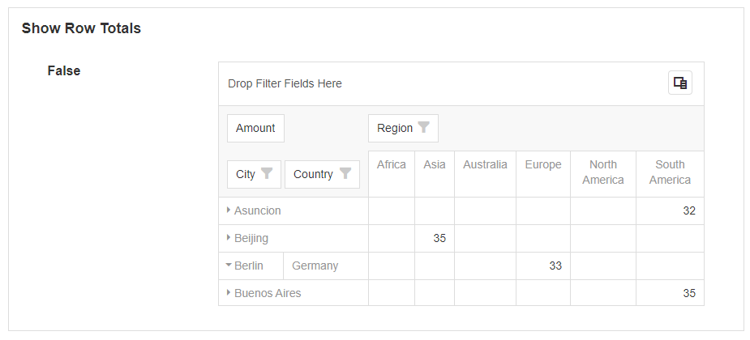
Show Row Grand Totals
This specifies if the totals for each column are counted and displayed at the bottom.
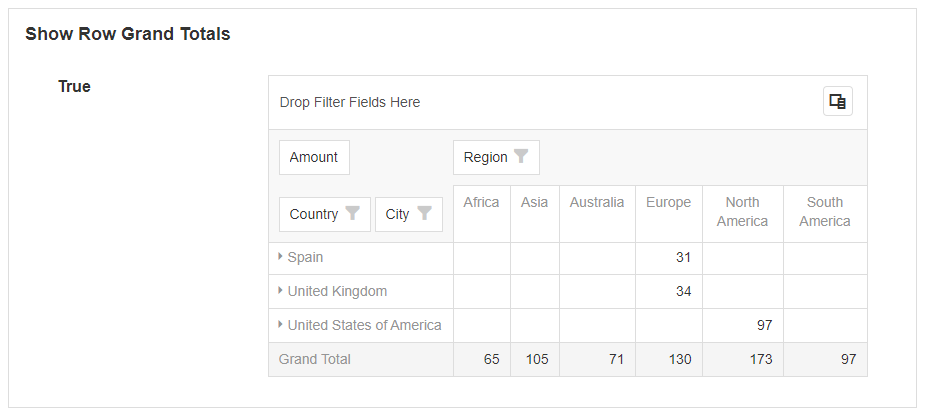
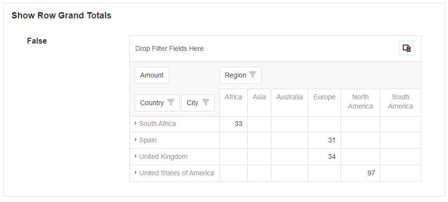
Show Drilldown
When this is enabled, selecting any of the values in the data region will open a grid that drills down for each record.
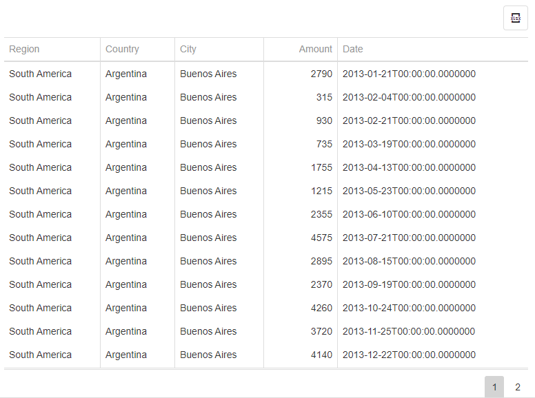
Show Totals Prior
By default, the totals for columns and rows are displayed at the end of the grouped row or column. If this option is enabled, the totals for columns or rows will be displayed before them, instead of after.
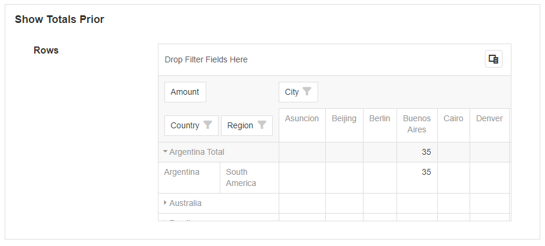
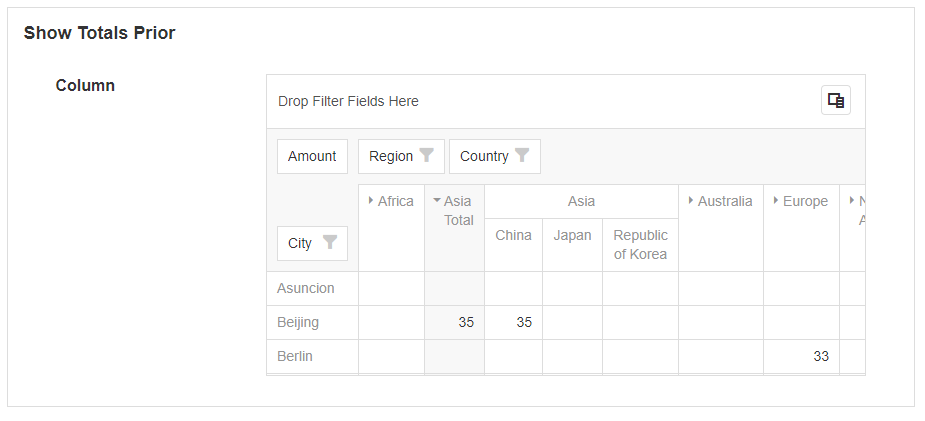
Behavior
Options for the behavior include sorting the data by summary, allowing sorting, allowing filtering, and retaining the layout.
Allow sorting by summary
This allows the user to sort by each individual column. To sort, right-click on a column and select Sort by this Column.
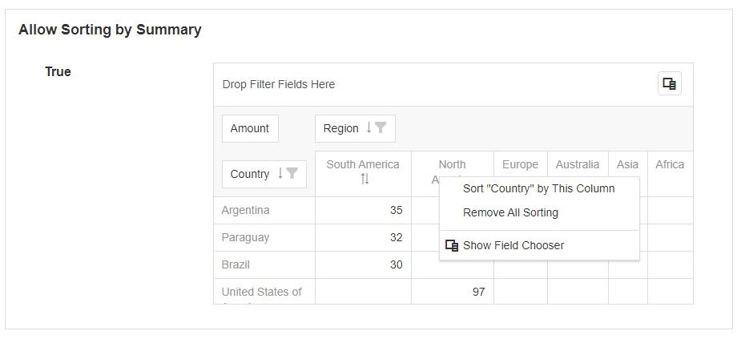
Allow Sorting
This displays an arrow next to the row or column name. This lets the user sort the order of the columns and rows based on their names.
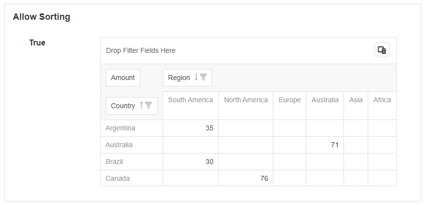
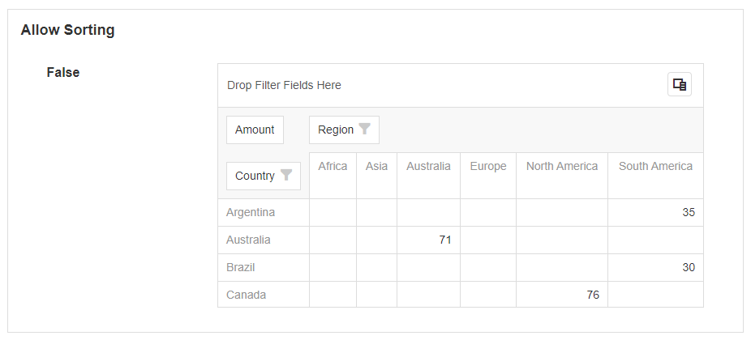
Allow Filtering
This displays a filter icon next to the row or column name. This allows the user to filter the rows or columns to only display certain values.
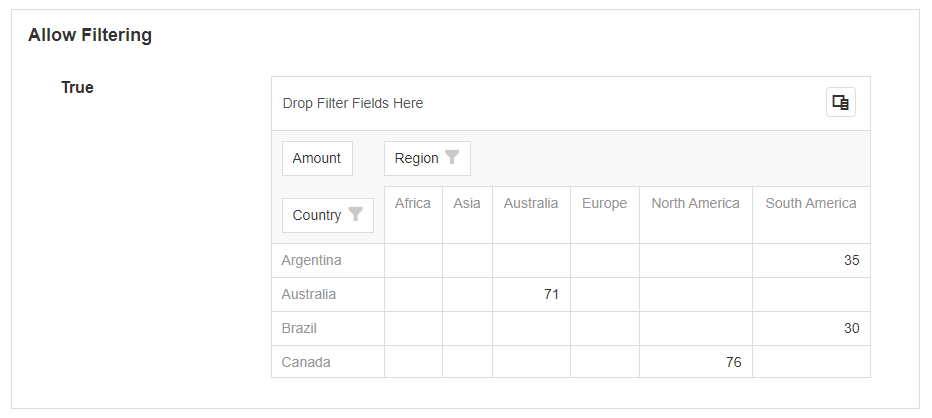
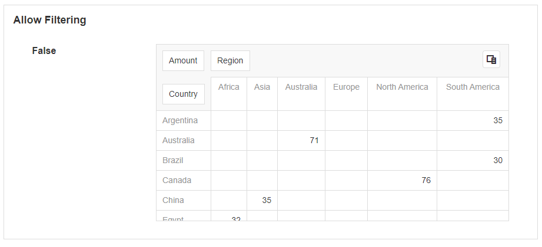
Retain Layout
If set to true, this will save the column, row, and data layout configuration in the browser. If changes are made to the Pivot Grid, and the user leaves the page and comes back later, the layout of the table will be the same as before they left it. If this option is set to false, the layout will reset to the default fields specified under Fields.
Data Source
Common Properties
Data Sources can be connected to a Pivot Grid. This will allow you to display data on the Pivot Grid.
See the Common Properties article for more details on common Data Source properties.
The Data Source property is required for the Pivot Grid.
Fields
The fields specify the default fields that are visible for the rows and columns on the Pivot Grid. The fields can be bound to a row or column from the Data Source and certain properties can be configured.
Area
This specifies where on the Pivot Grid the data will be shown. This includes whether it is shown on the row, column, data area, or filter area.
Data Type
The data type of the row, column, or cell. This can be a number, string of characters, true or false value, or a date.
Data Field
This is the field from the Data Source that is going to be used when displaying the data.
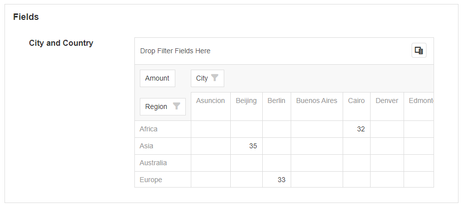
Last modified: May 25, 2025